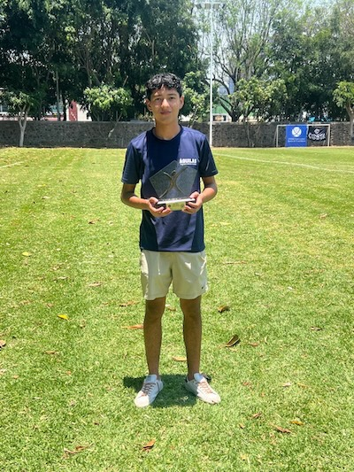
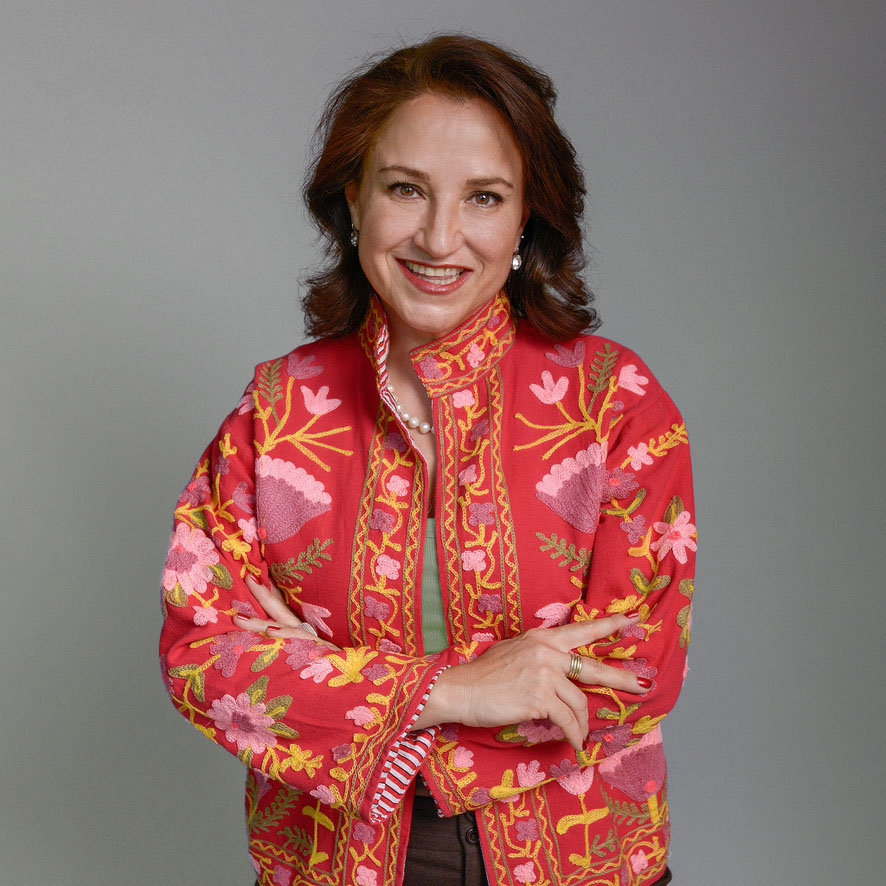
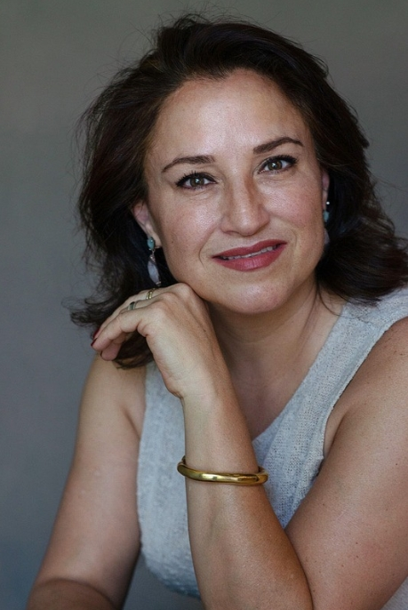
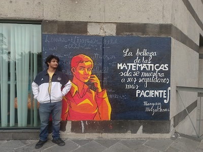
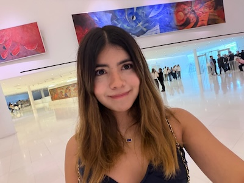

"Gracias al coaching aprendí a entenderme a mí mismo y a tomar decisiones con calma. No solo cambió mi futuro, cambió mi forma de ver la vida."
Acompaño a jóvenes a conocerse, explorar sus posibilidades y tomar una de las decisiones más importantes de su vida con claridad y confianza.
· 100% personalizada.


Durante años ayudé a jóvenes a estudiar en el extranjero. Y fue ahí donde descubrí algo que cambió por completo mi manera de trabajar: muchos tenían claro a qué país querían ir, pero muy pocos sabían realmente quiénes eran.
Yo también estuve ahí. Elegí una carrera que terminé abandonando, y después estudié otra que tampoco ejercí muchos años. Durante mucho tiempo sentí que iba reaccionando a las oportunidades, en lugar de construir un camino propio.
Esa experiencia cambió por completo mi forma de ver la orientación vocacional. Hoy sé que el verdadero problema no es escoger una carrera: es tomar decisiones importantes sin conocerte.
Por eso creé C2C — De la Confusión a la Claridad, y hoy acompaño a jóvenes y familias a tomar decisiones académicas y de vida desde la claridad, no desde el miedo.
Creo en el poder del autoconocimiento para transformar decisiones... y vidas.
La mayoría de los jóvenes nunca aprende realmente a tomar decisiones sobre su futuro. Por eso muchos terminan eligiendo una carrera desde la presión, el miedo o la desinformación. Mi trabajo consiste en acompañarlos a descubrir quiénes son antes de decidir hacia dónde quieren ir.
Lo que escucho en primera sesión
"Mis papás quieren que estudie medicina y yo ni sé si me gusta."
Estudiante de 5º semestre
4 preguntas rápidas. Sin registro, sin vueltas — solo para que veas en qué punto estás hoy.
Y está bien no tener todo claro todavía. Un acompañamiento 1:1 te puede ahorrar meses de dar vueltas solo/a.
Agenda tu primera sesión GRATISNo se trata únicamente de elegir una carrera. Se trata de construir un proyecto de vida desde el autoconocimiento, la estrategia y la confianza.
No solo te ayudo a elegir una carrera, te acompaño a:
Toca cada punto para ver de qué se trata — a través de un acompañamiento 100% personalizado.

¿Estás por tomar decisiones importantes sobre tu futuro y no sabes por dónde empezar?

Si empezaste una carrera y sientes que no era lo que esperabas, te acompaño a replantearla.

¿Quieres acompañar mejor a tu hijo en esta decisión?
Para padres de familia: sé que no quieres imponerle un camino a tu hijo, pero tampoco quieres verlo perdido. Te acompaño también a ti, para que puedas apoyar su proceso sin controlarlo — y para que ambos lleguen a una decisión con la que se sientan tranquilos.

"Gracias al coaching aprendí a entenderme a mí mismo y a tomar decisiones con calma. No solo cambió mi futuro, cambió mi forma de ver la vida."

"Me sentía perdido y no sabía qué hacer. Gracias al coaching descubrí muchas más oportunidades de las que imaginaba, encontré el camino que quiero seguir y hoy me siento tranquilo con mi futuro."

"En lugar de sentirme nerviosa, hoy me siento cómoda y segura. Gracias al coaching encontré el camino que quiero seguir y sé qué quiero estudiar."
"Gracias a Pau, hoy me siento segura de lo que quiero estudiar y me emociona poder estudiar algo que me apasiona. También descubrí cómo me veo en mi futuro y el tipo de vida que quiero."
"Agradezco a Pau porque estuvo a cada momento conmigo guiándome y apoyándome. Gracias a su coaching, hoy ya me siento listo y ya no tengo miedo. El programa me dio la base para encontrarme a mí mismo y la profesión que quiero."
"El coaching me dio calma, claridad y la motivación para hacer realidad las cosas que tenía en mente. Ahora entiendo que los miedos que tenía eran solo pensamientos negativos. Hoy estoy más segura y tranquila porque sé que cada quien tiene un proceso diferente."
"Gracias al coaching aprendí a entenderme a mí mismo y a tomar decisiones con calma. No solo cambió mi futuro, cambió mi forma de ver la vida."
"Me sentía perdido y no sabía qué hacer. Gracias al coaching descubrí muchas más oportunidades de las que imaginaba, encontré el camino que quiero seguir y hoy me siento tranquilo con mi futuro."
"En lugar de sentirme nerviosa, hoy me siento cómoda y segura. Gracias al coaching encontré el camino que quiero seguir y sé qué quiero estudiar."
"Gracias a Pau, hoy me siento segura de lo que quiero estudiar y me emociona poder estudiar algo que me apasiona. También descubrí cómo me veo en mi futuro y el tipo de vida que quiero."
"Agradezco a Pau porque estuvo a cada momento conmigo guiándome y apoyándome. Gracias a su coaching, hoy ya me siento listo y ya no tengo miedo. El programa me dio la base para encontrarme a mí mismo y la profesión que quiero."
"El coaching me dio calma, claridad y la motivación para hacer realidad las cosas que tenía en mente. Ahora entiendo que los miedos que tenía eran solo pensamientos negativos. Hoy estoy más segura y tranquila porque sé que cada quien tiene un proceso diferente."
Agenda una sesión de diagnóstico gratuita y descubramos juntos cuál puede ser el mejor siguiente paso.
Agenda YA primera sesión GRATIS